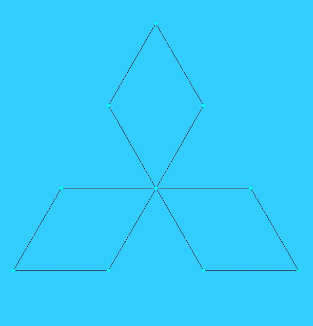
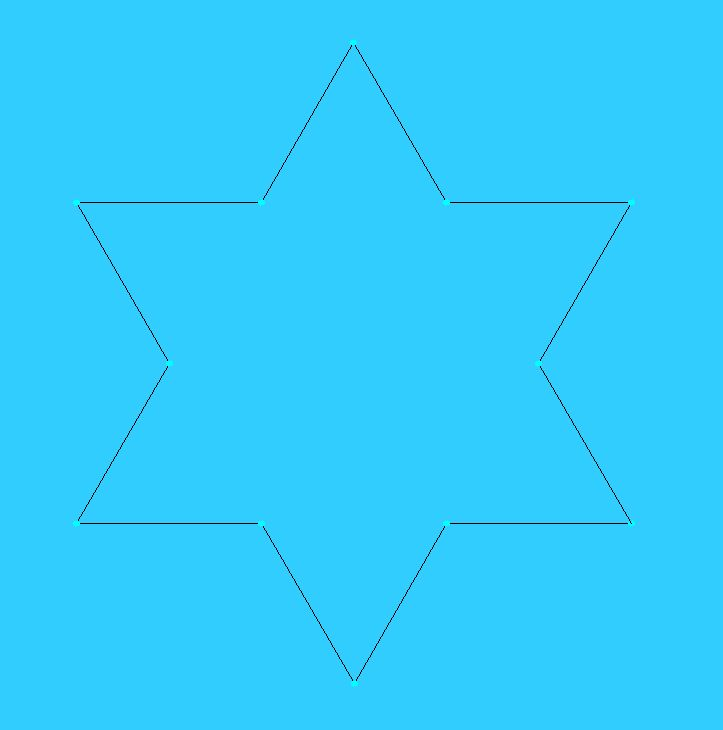
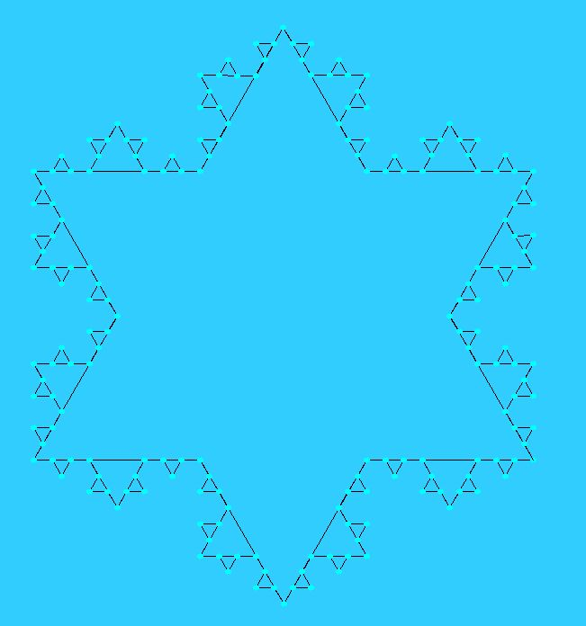
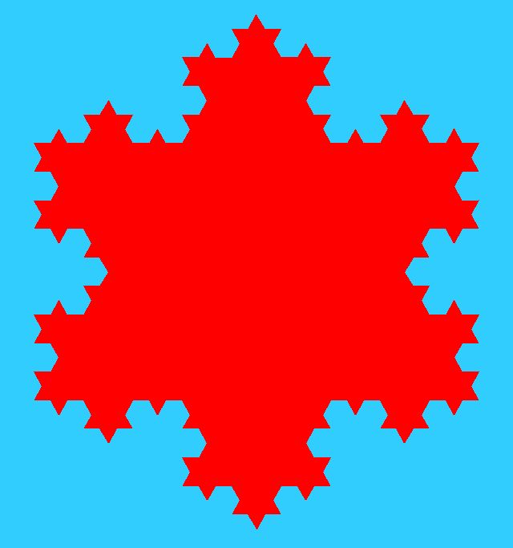
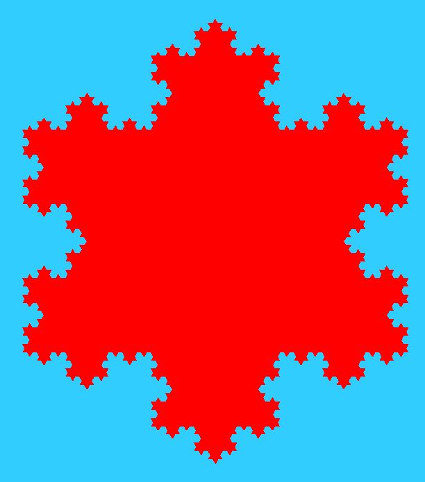
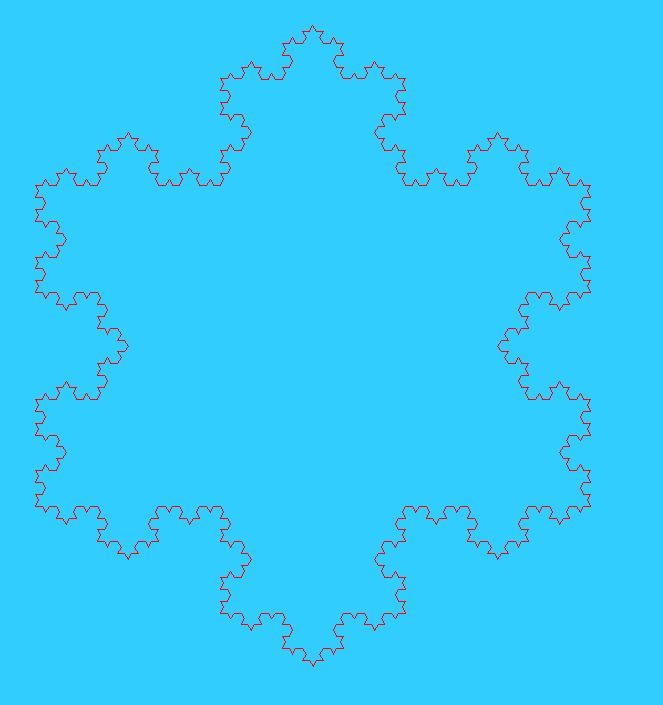

<?php
Header("Content-Type: image/png");#možno použít jpg
$sirka=801;
#liché číslo, aby střed vyšel na "celý pixel"
$im = ImageCreate($sirka, $sirka);
$BG= ImageColorAllocate($im, 50, 205, 255);
$K=ImageColorAllocate($im, 0,0,0);
$R=ImageColorAllocate($im, 255,0,0);
$G=ImageColorAllocate($im, 0,255,0);
$B=ImageColorAllocate($im, 0,0,255);
$C=ImageColorAllocate($im, 0,255,255);
$M=ImageColorAllocate($im, 255,0,255);
$Y=ImageColorAllocate($im, 255,255,0);
ImageFill($im, 0, 0, $BG);
#zde je obrázek
ImagePNG($im);#možno použít ImageJPG
imagedestroy ( $im );
?>
$a=array(); $stredx=($sirka-1)/2; $stredy=($sirka-1)/2;
$x[0]=0.4*$sirka*cos(1*pi()/6)+$stred[0]; $y[0]=0.4*$sirka*sin(1*pi()/6)+$stred[1]; $x[1]=0.4*$sirka*cos(5*pi()/6)+$stred[0]; $y[1]=0.4*$sirka*sin(5*pi()/6)+$stred[1]; $x[2]=0.4*$sirka*cos(9*pi()/6)+$stred[0]; $y[2]=0.4*$sirka*sin(9*pi()/6)+$stred[1];
for ($i=0;$i<count($x);$i++){
$z=$i;
$na=($i+1)%count($x);
ImageLine ($im, $x[$z], $y[$z], $x[$na], $y[$na], $K);
ImageFilledArc($im, $x[$z], $y[$z], 7, 7, 0, 360, $C,IMG_ARC_EDGED);
}
$x1=array();
$y1=array();
for ($i=0;$i<count($x);$i++){
$x1[]=$x[$i];
$y1[]=$y[$i];
$z=$i;
$na=($i+1)%count($x);
#smerovy vektor strany
$sx=$x[$na]-$x[$z];
$sy=$y[$na]-$y[$z];
$x1[]=$x[$z]+1/3*$sx;
$y1[]=$y[$z]+1/3*$sy;
$pomx=$x[$z]+1/2*$sx;
$pomy=$y[$z]+1/2*$sy;
$x1[]=$pomx;
$y1[]=$pomy;
$x1[]=$x[$z]+2/3*$sx;
$y1[]=$y[$z]+2/3*$sy;
}
$x=$x1;$y=$y1;
#smerovy vektor strany $sx=$x[$na]-$x[$z]; $sy=$y[$na]-$y[$z]; #normálový vektor třetinové velikosti $nx=-$sx/3; $ny=$sy/3;
$pomx=$x[$z]+1/2*$sx; $pomy=$y[$z]+1/2*$sy; $x1[]=$pomx+sqrt(3)*$nx/2; $y1[]=$pomy+sqrt(3)*$ny/2;

$nx=-$sx/3; $ny=$sy/3;

for ($k=0;$k<3;$k++){
$x1=array();
$y1=array();
for ($i=0;$i<count($x);$i++){
$x1[]=$x[$i];
$y1[]=$y[$i];
...
}
for ($i=0;$i<count($x);$i++){
$z=$i;
$na=($i+1)%count($x);
ImageLine ($im, $x[$z], $y[$z], $x[$na], $y[$na], $K);
ImageFilledArc($im, $x[$z], $y[$z], 7, 7, 0, 360, $C,IMG_ARC_EDGED);
}
}

...
#for ($i=0;$i<count($x);$i++){
# $z=$i;
# $na=($i+1)%count($x);
# ImageLine ($im, $x[$z], $y[$z], $x[$na], $y[$na], $K);
# ImageFilledArc($im, $x[$z], $y[$z], 7, 7, 0, 360, $C,IMG_ARC_EDGED);
#}
}
$obvod=array();
for ($i=0;$i<count($x);$i++){
$obvod[]=$x[$i];
$obvod[]=$y[$i];
}
ImageFilledPolygon($im, $obvod, Count($obvod)/2, $R);



<?php
if (!isset($_GET["obr"])){
?>
<html>
<head>
</head>
<body>
<form method=post>
<img src=koch.php?obr=1>
</form>
</body>
</html>
<?php
}else{
Header("Content-Type: image/png");#možno použít jpg
$sirka=801;
...
ImagePNG($im);#možno použít ImageJPG
imagedestroy ( $im );
}
?>
Kolik opakování:<select name="stupen" size=1> <option value="0">0</option> <option value="1">1</option> <option value="2">2</option> <option value="3">3</option> <option value="4">4</option> <option value="5">5</option> </select> Vyplnit:<input type=checkbox name=vypln value=1> <input type=submit>
if (isset($_POST["stupen"])){
$stupen=$_POST["stupen"];
if (isset($_POST["vypln"])){
$vypln=1;
}else{
$vypln=0;
}
}else{
$vypln=0;
$stupen=0;
}?>
...
<form method=post>
<?php
print "<img src=koch.php?obr=1&vypln=$vypln&stupen=$stupen>";
?>
...
}else{
Header("Content-Type: image/png");#možno použít jpg
if (isset($_GET["vypln"])){
$vypln=$_GET["vypln"];
}else{
$vypln=0;
}
if (isset($_GET["stupen"])){
$stupen=$_GET["stupen"];
}else{
$stupen=0;
}
...
for ($k=0;$k<$stupen;$k++){
...
if ($vypln==1){
ImageFilledPolygon($im, $obvod, Count($obvod)/2, $R);
}else{
ImagePolygon($im, $obvod, Count($obvod)/2, $R);
}
<?php
for ($i=0;$i<6;$i++){
if ($i==$stupen){
print "<option value=\"$i\" selected>$i";
}else{
print "<option value=\"$i\">$i";
}
}
if ($vypln==1){
print "Vyplnit:<input type=checkbox name=vypln value=1 checked>";
}else{
print "Vyplnit:<input type=checkbox name=vypln value=1>";
}
?>
<input type=submit>